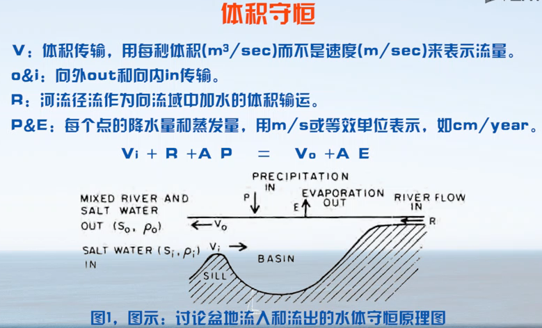

海水部分性质与海洋通量。
第二章：海水性质
回顾：地球科学导论中的概念
盐度
溶解在水中的固体物质的总量。平均盐度为3.5%。
密度
依赖于温度，盐度，压力。非线性关系需用“经验状态方程”。
物以类聚，水以团分。较冷的水可压缩性强一些。
Cabbel混合：不同特定温盐的水混合在一起密度变大，体积变小。
中性面提出是为了消除压力对密度的影响。
特征分布
海温的复杂特征是由海洋环流和大气强迫的空间变化形成的。
上层海洋温度分布、温跃层等概念，
盐度分布为双叶结构，亚热带盐度最高，热带和亚极地盐度最低。
开阔大洋中盐度的年变化一般小于千分之0.5。
大西洋具有明显的盐度结构，太平洋深水的盐度比较均匀。
深海海水的密度比海洋表面的密度大5%。
第三章：海洋通量
通量：单位时间内流经某单位面的某属性量，表示的是某属性量输运强度的物理量。
质量通量
$M=\rho\times v\times a(sec/kg)$
质量=密度x速度x面积。
盐度通量
盐量守恒原理：海洋中溶解盐的总质量是恒定的（近乎）。
$V_i\cdot \rho_i\cdot S_i=V_o \cdot \rho_o \cdot S_o$
S是盐度。密度变化不大，可以略掉。
记$F=R+P-E$为淡水输入量，则结合体积守恒和盐度守恒得
$F=V_i\cdot(S_i/S_o-1)$或$F=V_o\cdot(1-S_o/S_i)$
体积通量
每秒通过的体积，单位Sv = Sverdrup，$1 Sv = 10^6 m^3/s$。
热通量
$Q_t=Q_s+Q_b+Q_h+Q_e+Q_v$
热收支=短波辐射+长波辐射+感热通量+潜热通量+？
短波辐射 Qs
- 角度越小反射越大，吸收越小
- 云，冰雪反射
- 吸收度（比热，温度，热能）与海水性质（叶绿素浓度）
长波辐射 Qb
海中能量的净损失，海面向外辐射与接受大气辐射（与绝对温度的四次方成正比）
感热通量 Qh
海洋上方空气温度的垂直差（梯度）。
潜热通量 Qe
蒸发降雨带来的热量变化，一般是海洋释放热量。
百科：
方程式：Qs-Qc-Qe-Qn±Qw±QA=Qt
Qc为海水通过与大气的辐射热交换而失去的热量；
Qn为海水通过与大气的接触热交换失去的热量；
Qw为该水层与垂直方向上其他水层的涡动热交换；
QA为水平方向上的海洋热平流。
如方程左边各项之和大于零，Qt为正，表示给定时间内该水层收入的热量较放出的热量为大，海水的热含量增加，水温因而增高。
反之，Qt为负，表示热支出大于热收入，海水热含量减少，水温随之降低。
因此，Qt是直接体现海洋温度变化的热量要素，可用来说明给定海区的水温变化的过程。
下一篇：海洋观测数据，观测方法，基本方程
上一篇：走进物理海洋学